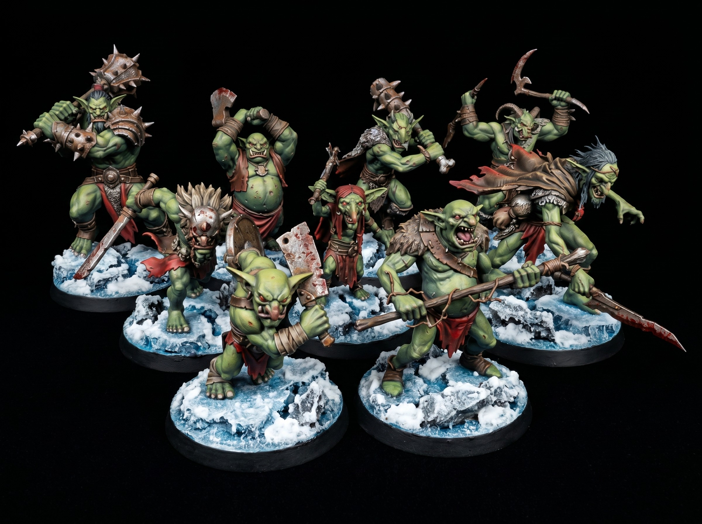

Painting Weathered Steel on 3D Printed Miniatures
October 08, 2026

Start with a matte black primer. Strong shadows do the heavy lifting in tabletop miniature painting. Basecoat the armor plates with a deep gunmetal acrylic. Leave the black primer visible inside panel joints and deep recesses.
Build realistic wear with a sponge. Tear off a small piece of packing foam and dip it into bright silver. Dab most of the paint off onto a paper towel until the sponge is nearly dry. Tap the foam lightly across raised edges and plate centers. Random patterns read as authentic battle damage across the game table.
Finish with targeted grime. Thin an orange-brown wash with water. Push the wash straight into rivets and lower seams where rust naturally gathers. Edge-highlight the sharpest corners with pure silver. Your tabletop RPG minis look battle-tested in ten minutes flat.
Get free miniatures:
- Fantasy: https://cults3d.com/@BattleFoundry
- Scifi: https://cults3d.com/@BATTLEFOUNDRYSCIFI
- Grimdark: https://cults3d.com/@DREADWORKS
- Resin Statue: https://cults3d.com/@BlacksiteSyndicate